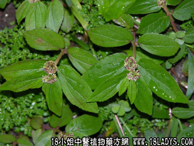

别名：飞扬草、天疱草。
植物名：飞扬草。
生长环境：本品为一年生，直立草本。荒地上常有之。
分布：广布于全球亚热带地区，广州近郊遍野皆产。
入药部分：全草，内服宜干用，外洗宜生用。
采集期：夏、秋。
自采地点：荒地。
性味：性微凉、味微苦。
功能：解毒、去脓、干水止痒。
主治、用量和用法：1、痢疾：干用5钱至1两，清水煎服；2、飞疡疮：干用适量，煎水外洗；3、天疱疮：用法同上；4、皮肤痕痒：用法同上。
验方：（治苏痨方）生大飞扬5钱、生马齿苋5钱、生羊蹄草5钱、生白勒芫5钱、生井栏茜5钱、生旱莲草5钱，各药擂烂，取汁去渣，加蜜糖，炖一小时服。
（方解）苏劳，民间认为产后恶露未清，性交过早而致，症似痨伤，终成肺病，因肺受肾气使然。方中白簕芫止咳理血，专入肺经，大飞扬、羊蹄草、井栏茜、马齿苋、俱为大肠经药，能解热毒，旱莲清肝，免木旺侮金，并能清肾加龙雷之火，法在祛邪护肺解毒。各药擂烂取汁，其性更长，加蜜滋润，经过炖热，寒而不峻。
（方歌）治苏劳症大飞扬，羊蹄马齿井栏详，旱莲白勒痛捣烂，取汁炖蜜服之良。